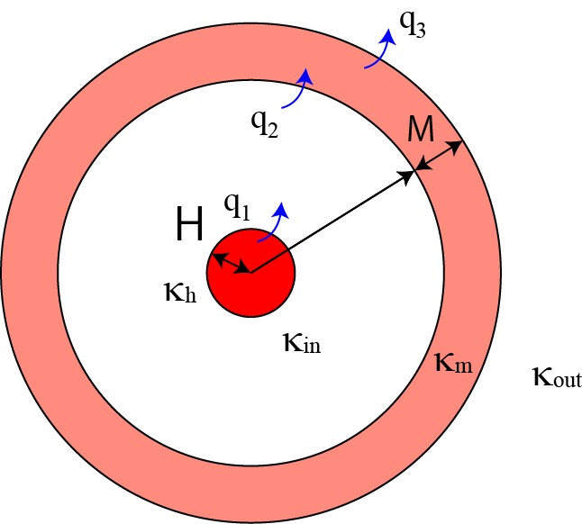

球体の発熱による温度分布-熱源が一様ではなく，中心に局在している場合-31
では，熱源が中心の局在していたらどうなるでしょう？
基本的には，同じです．

上記のようなモデルを考えてみます．
半径Hの熱源（熱伝導率はκh）
が存在し，
半径Hの熱源と細胞との界面で熱q1
半径Rの細胞と細胞膜との界面で熱q2
半径R+Mの細胞+細胞膜と外界との界面で熱q3
が流れるとします．
今までの議論から，
\(\Large T_h = -\frac{1}{6} \frac{p}{\kappa_h} r^2 + C_1 \)
\(\Large T_{in} = -\frac{C_2}{r} + C_3 \)
\(\Large T_m = -\frac{C_4}{r} + C_5 \)
\(\Large T_{out} = -\frac{C_6}{r} + R.T \)
となることがわかります．
各境界の熱の流出量
境界条件は，
\(\Large \frac{dT_{in}}{dr} \vert_{r=R} = -\frac{q_2}{\kappa_{in}} = - \frac{p \ H^3}{3 \kappa_{in} R^2} \)
\(\Large \frac{dT_{m}}{dr} \vert_{r=R+M} = -\frac{q_3}{\kappa_{m}} = - \frac{p \ H^3}{3 \kappa_{m} (R+M)^2} \)
\(\Large \frac{dT_{out}}{dr} \vert_{r=R+M} = -\frac{q_3}{\kappa_{out}} = - \frac{p \ H^3}{3 \kappa_{out} (R+M)^2} \)
となります．
球の外側の熱拡散方程式
\(\Large T_{out} = -\frac{C_6}{r} + R.T \)
\(\Large \frac{dT_{out}}{dr} \vert_{r=R+M} = \frac{C_6}{r} \vert_{r=R+M} = \frac{C_6}{(R+M)^2} = - \frac{p \ H^3}{3 \kappa_{out} (R+M)^2} \)
\(\Large C_6 = - \frac{p \ H^3}{3 \kappa_{out}} \)
\(\Large T_{out} = \frac{p \ H^3}{3 \kappa_{out}} \frac{1}{r} + R.T \)
となる．
細胞膜の熱拡散方程式
\(\Large T_m = -\frac{C_4}{r} + C_5 \)
\(\Large \frac{dT_{m}}{dr} \vert_{r=R+M} = \frac{C_4}{r^2} \vert_{r=R+M} = \frac{C_4}{(R+M)^2} = - \frac{p \ H^3}{3 \kappa_{m} (R+M)^2} \)
\(\Large C_4 = - \frac{p \ H^3}{3 \kappa_m} \)
\(\Large T_m = \frac{p \ H^3}{3 \kappa_m} \frac{1}{r} + C_5 \)
\(\Large T_{out} (R+M) = T_m (R+M) \)
より，
\(\Large \frac{p H^3}{3 \kappa_{out}} \frac{1}{R+M} + R.T = \frac{p \ H^3}{3 \kappa_m} \frac{1}{R+M} + C_5 \)
\(\Large \begin{align*} C_5 &= \frac{p \ H^3}{3 \kappa_{out}} \frac{1}{R+M} + R.T - \frac{p \ H^3}{3 \kappa_m} \frac{1}{R+M} \\
&=
\frac{p \ H^3}{3 (R+M)} \left( \frac{1}{\kappa_{out}} - \frac{1}{\kappa_m} \right) + R.T \end{align*} \)
\(\Large \begin{align*} T_m &= \frac{p H^3}{3 \kappa_m} \frac{1}{r} + \frac{p \ H^3}{3 (R+M)} \left( \frac{1}{\kappa_{out}} - \frac{1}{\kappa_m} \right) + R.T \\
&= \frac{p H^3}{3} \left[ \frac{1}{\kappa_m r} + \frac{1}{R+M} \left( \frac{1}{\kappa_{out}} - \frac{1}{\kappa_m} \right) \right] + R.T \end{align*} \)
となります．
次ページに，細胞内（非発熱源），細胞内（発熱源）の熱拡散方程式を解いていきましょう．